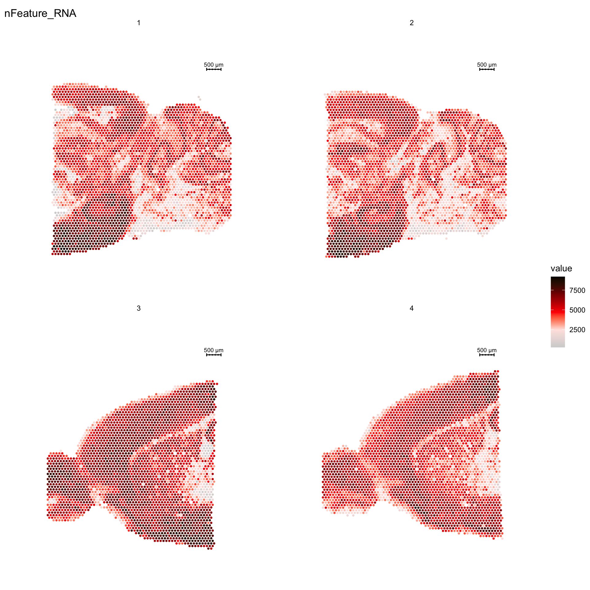
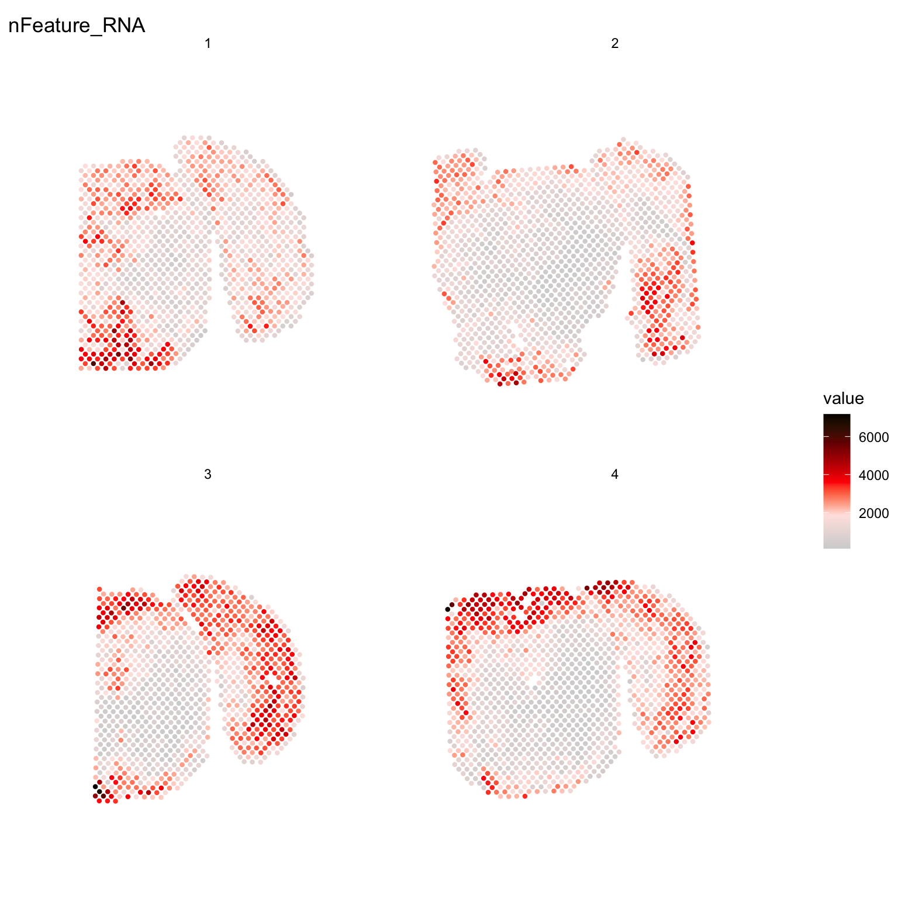

Last updated: 2022-02-28
Checks: 7 0
Knit directory: STUtility_web_site/
This reproducible R Markdown analysis was created with workflowr (version 1.7.0). The Checks tab describes the reproducibility checks that were applied when the results were created. The Past versions tab lists the development history.
Great! Since the R Markdown file has been committed to the Git repository, you know the exact version of the code that produced these results.
Great job! The global environment was empty. Objects defined in the global environment can affect the analysis in your R Markdown file in unknown ways. For reproduciblity it’s best to always run the code in an empty environment.
The command set.seed(20191031) was run prior to running the code in the R Markdown file. Setting a seed ensures that any results that rely on randomness, e.g. subsampling or permutations, are reproducible.
Great job! Recording the operating system, R version, and package versions is critical for reproducibility.
Nice! There were no cached chunks for this analysis, so you can be confident that you successfully produced the results during this run.
Great job! Using relative paths to the files within your workflowr project makes it easier to run your code on other machines.
Great! You are using Git for version control. Tracking code development and connecting the code version to the results is critical for reproducibility.
The results in this page were generated with repository version 64ae8be. See the Past versions tab to see a history of the changes made to the R Markdown and HTML files.
Note that you need to be careful to ensure that all relevant files for the analysis have been committed to Git prior to generating the results (you can use wflow_publish or wflow_git_commit). workflowr only checks the R Markdown file, but you know if there are other scripts or data files that it depends on. Below is the status of the Git repository when the results were generated:
Ignored files:
Ignored: .Rhistory
Ignored: analysis/.DS_Store
Ignored: analysis/manual_annotation.png
Ignored: pre_data/
Note that any generated files, e.g. HTML, png, CSS, etc., are not included in this status report because it is ok for generated content to have uncommitted changes.
These are the previous versions of the repository in which changes were made to the R Markdown (analysis/Getting_Started.Rmd) and HTML (docs/Getting_Started.html) files. If you’ve configured a remote Git repository (see ?wflow_git_remote), click on the hyperlinks in the table below to view the files as they were in that past version.
| File | Version | Author | Date | Message |
|---|---|---|---|---|
| html | d41bcb0 | Ludvig Larsson | 2022-02-28 | Build site. |
| html | 0dafcee | Ludvig Larsson | 2021-05-06 | Build site. |
| html | df62517 | Ludvig Larsson | 2021-05-06 | Build site. |
| html | 88b046f | Ludvig Larsson | 2021-05-05 | Build site. |
| html | 2523b70 | Ludvig Larsson | 2021-05-05 | Changed names of docs |
| Rmd | 363f911 | Ludvig Larsson | 2021-05-05 | Changed names of Rmds |
First you need to load the library into your R session.
library(STutility)10X Visium data output is produced with the spaceranger command line tool from raw fastq files. The output includes a number of files, and the ones that needs to be imported into R for STutility are the following:
disable.subset = TRUE when running InputFromTable.To use the full range of functions within STutility, all four files are needed for each sample. However, all data analysis steps that do not involve the H&E image can be performed with only the count file as input. To read in the 10x Visium .h5 files, the package hdf5r needs to be installed: BiocManager::install("hdf5r").
To follow along this tutorial with a test data set, go to the 10x Dataset repo and download the following two files:
The .zip file contains the H&E image (in two resolution formats; “tissue_lowres_image” and “tissue_hires_image”), the “tissue_positions_list” with pixel coordinates for the orginial TIF image and the “scalefactors_json.json” that contains the scalefactors used to derive the pixel cooridinates for the hires images. There are three alternatives to handle the scaling of pixel coordinates. Either, you manualy open the JSON file and note the scalefactor and state these numbers in a column in the infoTable named “scaleVisium” (see below). Or, you add a column named “json” with paths to the “scalefactors_json.json” files. A third option is to manually input the values to the function InputFromTable (see ?InputFromTable). If the scalefactors are incorrect, you will end up with misaligned coordinates. This could for example happen if you are trying to use the orignal H&E image and not the “tissue_hires_image.png” when running InputFromTable.
In this vignette we have used the datasets from Mouse Brain Serial Section 1 and 2 (Sagittal-Posterior)
The recommended method to read the files into R is via the creation of a data.frame that we will call the infoTable. There are four columns in this table that are required for Visium data: “samples”, “spotfiles”, “imgs” and “json”. These columns specify the paths to the required input files.
| samples | spotfiles | imgs | json |
|---|---|---|---|
| path/to/sample_1/count_file_1.h5 | path/to/sample_1/tissue_positions_list.csv | path/to/sample_1/tissue_hires_image.png | path/to/sample_1/scalefactors_json.json |
| path/to/sample_2/count_file_2.h5 | path/to/sample_2/tissue_positions_list.csv | path/to/sample_2/tissue_hires_image.png | path/to/sample_2/scalefactors_json.json |
Any number of extra columns can be added to the infoTable data.frame that you want to include as meta data in your Seurat object, e.g. “gender”, “age”, “slide_id” etc. These columns can be named as you like, but they should not be called not “sample”, “spotfiles”, “imgs” or “json”.
We are now ready to load our samples and create a “Seurat” object using our infotTable data.frame.
Here, we demonstrate the creation of the Seurat object, while also including some filtering (see section “Quality Control” for more information on filtering):
Note that you have to specify which platform the data comes from. The default platform is 10X Visium but if you wish to run data from the older ST platforms, there is support for “1k” and “2k” arrays. You can also mix datasets from different platforms by specifying one of; “Visium”, “1k” or “2k” in a separate column of the infoTable named “platform”. You just have to make sure that the datasets have gene symbols which follows the same nomenclature so that count matrices can be merged.
se <- InputFromTable(infotable = infoTable,
min.gene.count = 100,
min.gene.spots = 5,
min.spot.count = 500,
platform = "Visium")
Once you have created a Seurat object you can process and visualize your data just like in a scRNA-seq experiment and make use of the plethora of functions provided in the Seurat package. There are many vignettes to get started available at the Seurat web site.
For example, if you wish to explore the spatial distribution of various features on the array coordinates you can do this using the ST.FeaturePlot() function. Features include any column stored in the “meta.data” slot, dimensionality reduction objects or gene expression vectors.
ST.FeaturePlot(se, features = c("nFeature_RNA"), cols = c("lightgray", "mistyrose", "red", "darkred", "black"), ncol = 2, pt.size = 1.3)
| Version | Author | Date |
|---|---|---|
| a2036a8 | Ludvig Larsson | 2021-05-05 |
In general, using STutility for the old ST platform data follows the same workflow as for the 10X Visium arrays. The only difference is when loading the data into R.
The original ST workflow produces the following three output files:
The recommended method to read the files into R is via the creation of a “infoTable”, which is a table with at least three columns “samples”, “spotfiles” and “imgs”.
Test data:
samples <- list.files(pattern = "^Hippo[1-6].tsv.gz", path = system.file("extdata/counts", package = "STutility"), full.names = TRUE)
spotfiles <- list.files(pattern = "^alignment_table_Hippo[1-6].tsv.gz", path = system.file("extdata/counts", package = "STutility"), full.names = TRUE)
imgs <- list.files(pattern = "^Hippo[1-6].jpg", path = system.file("extdata/counts", package = "STutility"), full.names = TRUE)
infoTable <- data.frame(samples, imgs, spotfiles, stringsAsFactors = F)The provided count matrices uses EnsambleIDs (with version id) for the gene symbols. Gene symbols are often a preference for easier reading, and we have therefore included an option to directly convert the gene IDs when creating the Seurat object. The data.frame object required for conversion should have one column called “gene_id” matching the original gene IDs and a column called “gene_name” with the desired symbols. you also need to make sure that these columns have unique names, otherwise the converiion will not work. We have provided such a table that you can use to convert between EnsambleIDs and MGI symbols (mus musculus gene nomenclature).
#Transformation table for geneIDs
ensids <- read.table(file = list.files(system.file("extdata", package = "STutility"), full.names = T, pattern = "mouse_genes"), header = T, sep = "\t", stringsAsFactors = F)We are now ready to load our samples and create a “Seurat” object.
Here, we demonstrate the creation of the Seurat object, while also including some filtering:
Note that we specify that we’re using the “2k” array platform and also, since we in this case have genes in the columns, we set transpose=TRUE.
#TODO: add warnings if ids missmatch. Check that ids are in the data.frame ...
se <- InputFromTable(infotable = infoTable,
min.gene.count = 100,
min.gene.spots = 5,
min.spot.count = 500,
annotation = ensids,
platform = "2k",
transpose = TRUE)
Once you have created a Seurat object you can process and visualize your data just like in a scRNA-seq experiment and make use of the plethora of functions provided in the Seurat package. There are many vignettes to get started available at the Seurat web site.
Some of the functionalities provided in the Seurat package are not yet supported by STutility, such as dataset integration and multimodal analysis. These methods should in principle work if you treat the data like a scRNA-seq experiment, but you will not be able to make use of the image related data or the spatial visualization functions.
For example, if you wish to explore the spatial distribution of various features on the array coordinates you can do this using the ST.FeaturePlot() function.
ST.FeaturePlot(se, features = c("nFeature_RNA"), cols = c("lightgray", "mistyrose", "red", "darkred", "black"), ncol = 2, pt.size = 1.5, show.sb = FALSE)
| Version | Author | Date |
|---|---|---|
| a2036a8 | Ludvig Larsson | 2021-05-05 |